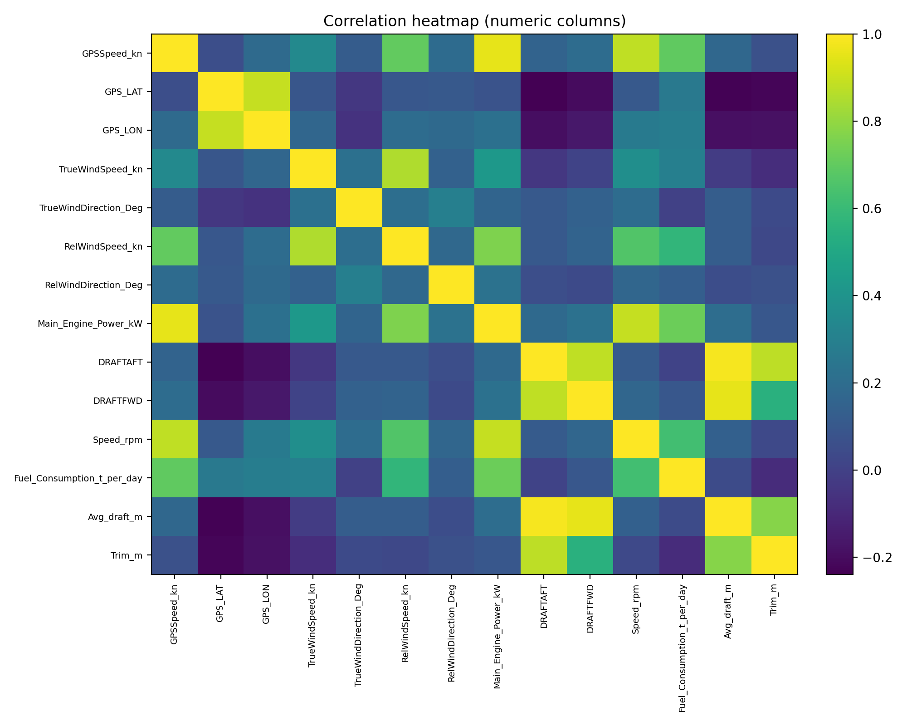
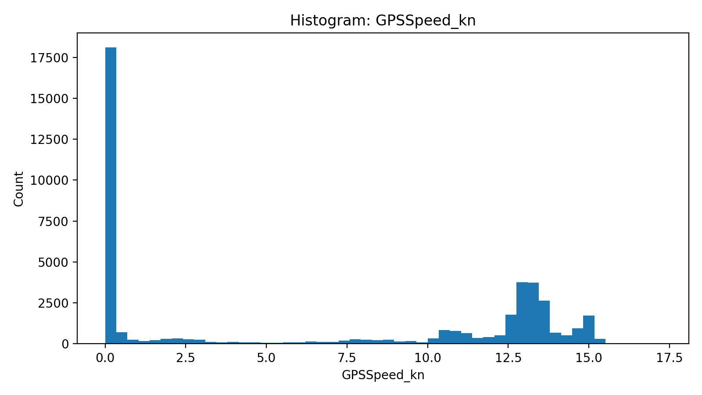
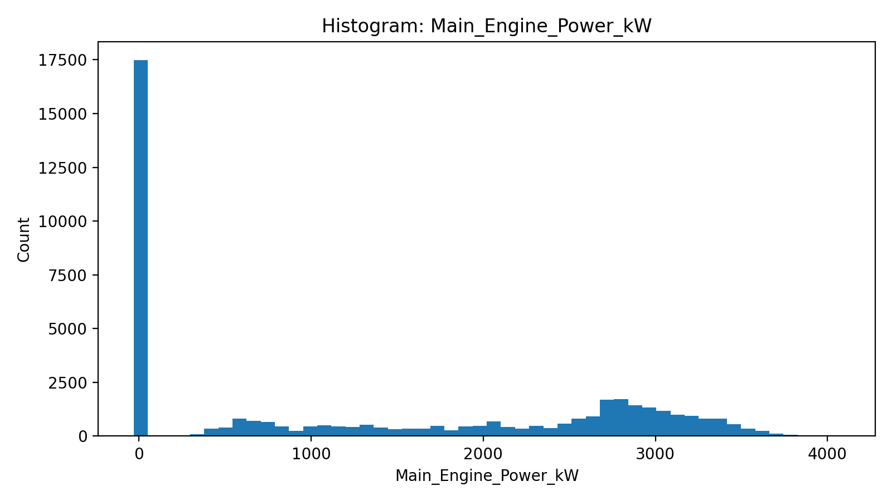
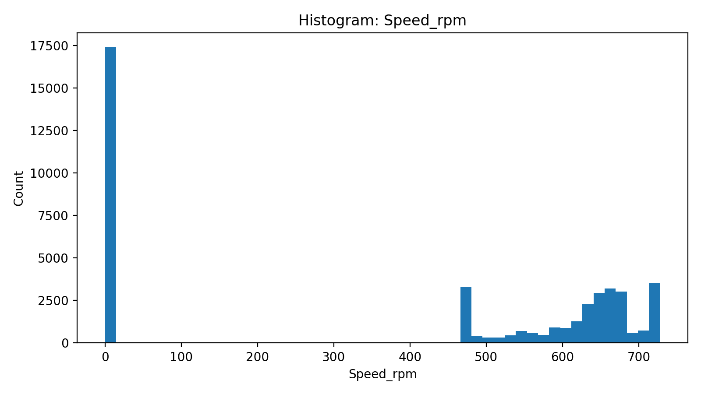
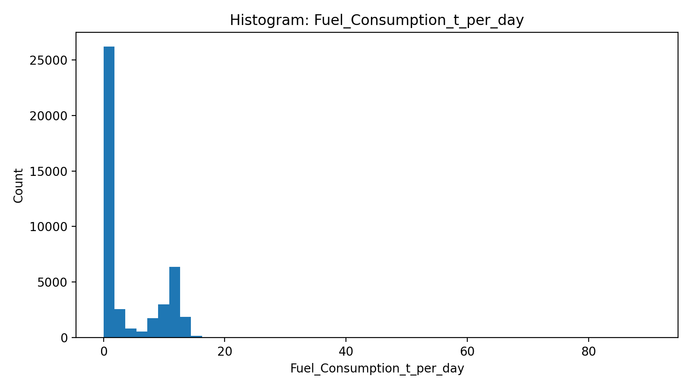
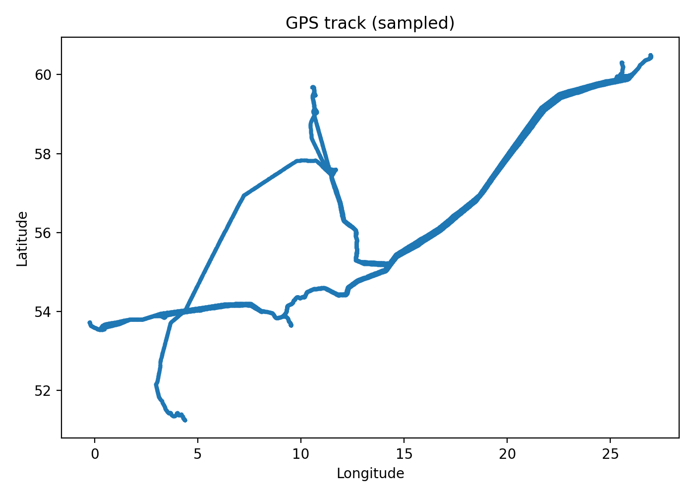
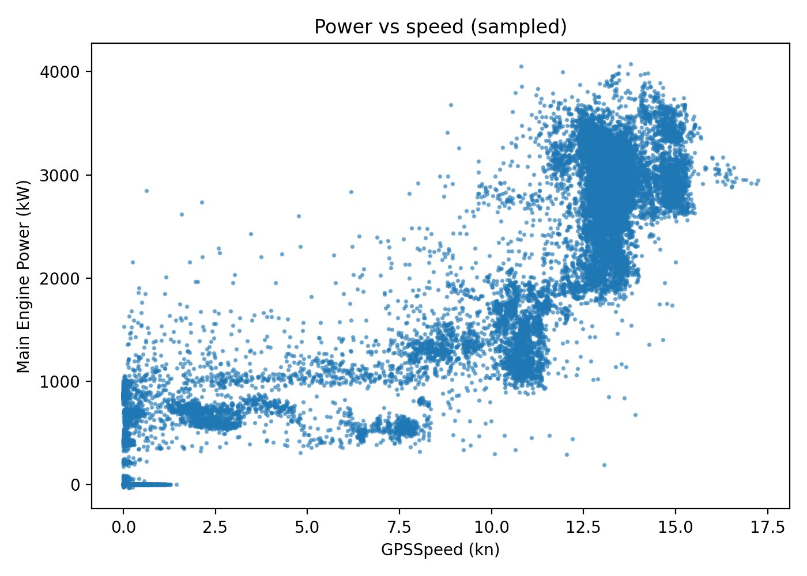

EDA report (redo) — data1.csv
Rows: 43,280 Columns: 15 Memory: 4.95 MB
Basic metrics
| metric |
value |
| rows |
43280.00 |
| columns |
15.00 |
| memory_MB |
4.95 |
| duplicate_rows |
0.00 |
| columns_with_missing |
1.00 |
Time coverage & sampling
| metric |
value |
| min_timestamp |
2020-03-01 00:00:30.874000+00:00 |
| max_timestamp |
2020-03-31 23:59:50.360000+00:00 |
| n_valid_timestamps |
43235 |
| n_missing_timestamps |
45 |
| median_interval_sec |
60.5405 |
| mean_interval_sec |
61.950305 |
| p95_interval_sec |
61.984 |
| p99_interval_sec |
121.007 |
| max_interval_sec |
789.039 |
Missingness
Key constraint checks
| rule |
count |
fraction_% |
| Main_Engine_Power_kW < 0 |
23 |
0.053142 |
| Trim_m outside [-5,5] |
19 |
0.043900 |
| DRAFTFWD <= 0 |
18 |
0.041590 |
| Avg_draft_m <= 0 |
18 |
0.041590 |
Top correlations
| col1 |
col2 |
corr |
abs_corr |
| DRAFTAFT |
Avg_draft_m |
0.984346 |
0.984346 |
| DRAFTFWD |
Avg_draft_m |
0.952262 |
0.952262 |
| GPSSpeed_kn |
Main_Engine_Power_kW |
0.952071 |
0.952071 |
| Main_Engine_Power_kW |
Speed_rpm |
0.892812 |
0.892812 |
| GPS_LAT |
GPS_LON |
0.889872 |
0.889872 |
| DRAFTAFT |
DRAFTFWD |
0.883551 |
0.883551 |
| GPSSpeed_kn |
Speed_rpm |
0.882865 |
0.882865 |
| DRAFTAFT |
Trim_m |
0.875508 |
0.875508 |
| TrueWindSpeed_kn |
RelWindSpeed_kn |
0.852969 |
0.852969 |
| Avg_draft_m |
Trim_m |
0.776639 |
0.776639 |
| RelWindSpeed_kn |
Main_Engine_Power_kW |
0.762038 |
0.762038 |
| Main_Engine_Power_kW |
Fuel_Consumption_t_per_day |
0.720970 |
0.720970 |
| GPSSpeed_kn |
RelWindSpeed_kn |
0.704494 |
0.704494 |
| GPSSpeed_kn |
Fuel_Consumption_t_per_day |
0.697104 |
0.697104 |
| RelWindSpeed_kn |
Speed_rpm |
0.665717 |
0.665717 |
Correlation heatmap

Key histograms




Extra plots

